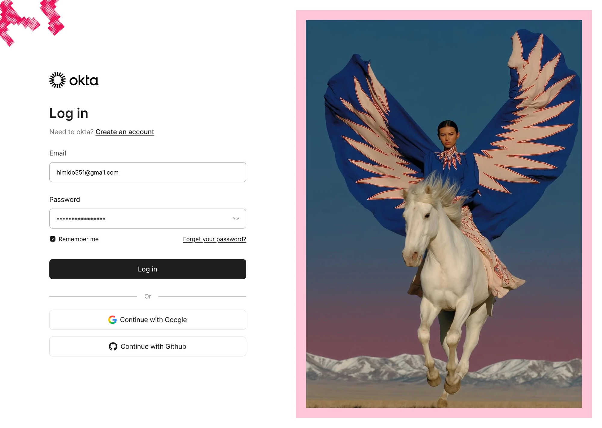
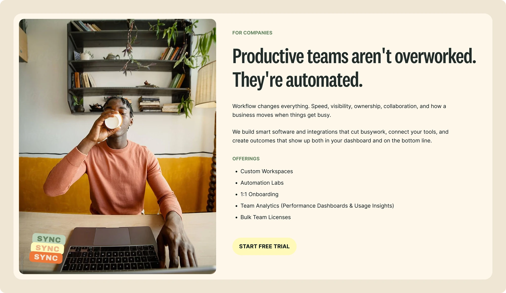
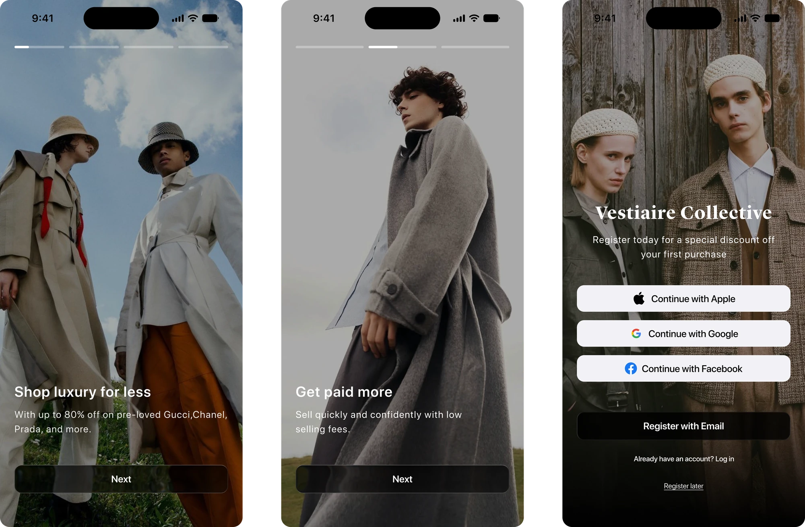

IRYSS Enterprise CRM
Designed a complete CRM experience for managing leads, contacts, companies, tasks, and analytics. The focus was on creating a simple, scalable interface that helps teams work more efficiently and make faster decisions.
Product Designer
I’m Ahmed, a product designer who cares about clarity, craft and building things that work.
I design digital products and explore AI-native workflows to turn ideas into real experiences. I’m also building Design Toolkit, a browser extension that helps designers and developers inspect websites and recreate UI with more accuracy.
Designed a complete CRM experience for managing leads, contacts, companies, tasks, and analytics. The focus was on creating a simple, scalable interface that helps teams work more efficiently and make faster decisions.
An idea I turned into a real product. I designed it, built it with AI, launched the website, figured out the pricing, and shipped it to the Chrome Web Store. Now it has 500+ users and 5 releases, and I’m still building on it.


